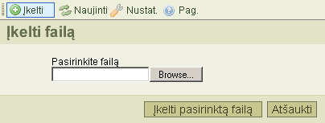

漠k臈limo* mygtukas, esantis 寞ranki懦 juostoje, atidaro "Fail懦 寞k臈lim膮", kuris skirtas nauj懦 fail懦 寞k臈limui 寞 segtuv膮. 沤emiau pateiktas 拧io 寞rankio atvaizdas:

Kad u啪darytum臈te fail懦 寞k臈lim膮, spustel臈kitee "At拧aukti" mygtuk膮, arba spauskite "漠kelti" i拧 naujo 寞ranki懦 juostoje.
* "漠kelti/Upload" tai yra techninis terminas. Tai rei拧kia failo perdavim膮 i拧 savo kompiuterio 寞 server寞.
沤emiau pateikti prane拧imai gali atsirasti 寞keliant failus:
Tai parodo jof failas su tokiu pa膷iu pavadinimu jau egzistuoja tame pa膷iame segtuve. Konfliktui i拧vengti, prie jo pavadinimo pridedamas "(1)".
漠keliamas failas buvo nepriimtas.
Da啪niausia 拧i懦 prane拧im懦 prie啪astis yra ta, kad CKFinder buvo sukonfig奴ruotas nepriimt懦 tokios r奴拧ies fail懦, atsi啪velgiant 寞 pl臈tinius. Tai saugumo apribojimas. Kita prie啪astis gali b奴ti ta, kad failo apimtis yra per didel臈. Tokiu atveju, reikia pakeisti pa膷io serverio nustatymus, kurie leist懦 寞kelti didesn臈s apimties failus.
漠keliamame faile yra html duomenys. Saugumo sumetimais, 寞kelti galima tik tuos failus, kuri懦 pl臈tiniai yra nurodyti konfig奴racijoje ir kurie neturi html pl臈tinio.
D臈l detalesni懦 pakeitim懦 pra拧au susisiekite su savo sistem懦 administratoriais.